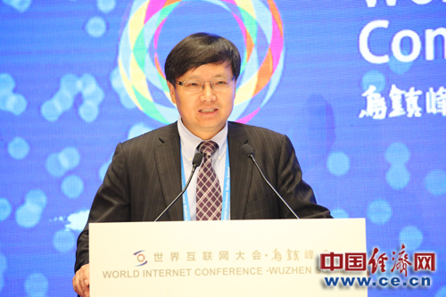

第三届世界互联网大会11月16日在乌镇开幕,大会除了开幕式、闭幕式以外,设置了16场论坛、20个议题。图为EMC公司全球副总裁周西柱在共青团中央和全国青联主办的互联网青年论坛上发言。
第三届世界互联网大会——互联网青年论坛今日在浙江乌镇举行,本届论坛主题是“互联网时代青年的机遇与责任”。EMC公司全球副总裁周西柱在论坛上表示,在互联网时代,可以说年轻人是主力军,这个群体是受影响最大的,也是影响互联网最大的一个群体。互联网对青年来说是意味着巨大的机遇,这个机遇同时也意味着巨大的挑战和责任。
“在这个巨大的机遇来临的时候,作为我们年轻人如何去表现如何去行为,我相信扎克伯格这句话,最大的风险是不去冒险,所以我们要勇于担当,勇于创新,作一个时代的弄潮儿。” 周西柱说。
周西柱指出,在网络空间里,安全是一个基石是根本之一。国家颁布了网络安全法,这个法律对中国互联网建设会起到至关重要的作用。
发言全文如下:
尊敬的秦宜智书记,尊敬的各位嘉宾大家早上好,非常荣幸站在这里跟大家面对面,感谢组委会的安排,今天的话题是互联网与青年,我非常高兴谈这个话题,我女儿在上大学二年级,我非常了解她对互联网的看法,这次世界互联网大会天时地利人和。天时,习主席提出“构建网络空间命运共同体”,对我们从业人员来说指明了方向,也意味着巨大的机遇。地利,选址非常好,乌镇是千年水镇,非常漂亮。人和,这次来了很多高人,高朋满座,尤其秦书记亲临现场指导。
现在技术发展的非常快,我觉得技术对工作和生活造成非常大的改变,这个改变实际上对我们来说意味着巨大的机会,大家看一下,过去的15年有一个非常巨大的进步,计算能力实际上提高了大约一千倍。所以有这么多硬件的设备和软件出来,未来15年相信还会有一千倍以上的增加和改变,这些新的产品会影响到各个行业,这些产品会组成一张巨大的网。这张网就是物联网也是互联网。
网络对我们的生活影响非常的大,在互联网时代,可以说年轻人是主力军,这个群体是受影响最大的,也是影响互联网最大的一个群体,那么互联网对我们青年来说是意味着巨大的机遇,同时也意味着巨大的挑战和责任。我认为互联网是处在一个巨大的改变时代,改变即将来临,正如刚才姚总刚说的,我们的观点跟百度的董事长不太一样,我们认为这个时代的来临还有巨大的机遇在里面,会产生成千上万的独角兽。
在这个巨大的机遇来临的时候,作为我们年轻人如何去表现如何去行为,我相信扎克伯格这句话,最大的风险是不去冒险,所以我们要勇于担当,勇于创新,作一个时代的弄潮儿。习主席说构建网络空间命运共同体,我们觉得高瞻远瞩,为未来的一些行为方式提供了指导性的意见,我们也非常有信心在这个空间里构建我们的命运共同体。互联网对美国来说是一个机遇,对中国也是机遇,对全世界各个国家都是机遇,我们只有共同努力才能构建这个共同体,我们希望在这个共同体做到百花齐放、百家争鸣。这个提法有很好的中国传统智慧在里面,开幕式里习主席的致词里用到这句话,希望利用人类文明智慧滋润网络空间,修复网络生态,我觉得非常好。中国有五千年的文明,我们应该有文化自信,我们认为在这个网络空间里,安全是一个基石是根本,国家颁布了网络安全法,我认为非常恰分其实,这个法律对中国互联网建设会起到至关重要的作用。刚才说到国学对我们非常重要,在座的各位年轻人希望你们花点时间学学国学。
诚信是一个基础,几千年是这样,现在是这样,未来也是这样,希望大家把诚信作为自己的行为准则。
游戏规则之二,多样性,年轻人有时候喜欢走一点极端,其实应该包容,物之不齐物之情也,这是一个规律,以前毛泽东讲五湖四海,就是尊重多样性,法国的哲学家罗素也讲这个多样性是幸福之源,可见这个多样性对我们来说有多么的重要。
游戏规则第三,方向不能变,就是要向上和向善。看看我们公司考核人的公式,我认为首先有普适和常识的人才能成为我们的员工,什么叫常识,可能小到给别人扶门,电梯里不要大声说话,大到遵纪守法,这样的人才可以成为我们的合格员工。如果这个人能够控制自己的想法和欲望,这样的人也许可以有机会去上升,如果这个人有感恩之心就很好,不但可以做经理,还可以做朋友,当然仁慈之心层次比较高,我们不要求大家,但是我们需要大家知道这个仁慈之心的高度在哪里。
我们讲了很多还是希望大家实践,实践是检验真理的唯一标准,这句话在改革开放刚开始的时候起了一个巨大的作用,现在对于我们青年人在互联网时代创业创新同样有现实的意义,做到知行合一,同样希望大家看一看王阳明的《心学》,这个确确实实对我们的现实有非常强的指导意义,希望在这个纷繁复杂的互联网时代,大家能够保留一个敬畏之心,敬畏父母、领导、法律、自然,这个敬畏之心对各位来说都非常重要,我自己是这么做的,对我个人和生活起到非常好的效果,这句话是老子的话,我自己从业23年,九四年进入这个行业,多次地觉得这句话被印证,在这里分享给大家,希望大家记住这句话。
在这个伟大的时代大家不应该辜负这个时代,希望大家勇立潮头,改革拓新,崇德向善,为我们伟大的中国梦,做出应有的贡献。谢谢各位。
- 推荐图文
- 推荐人物
- 推荐企业